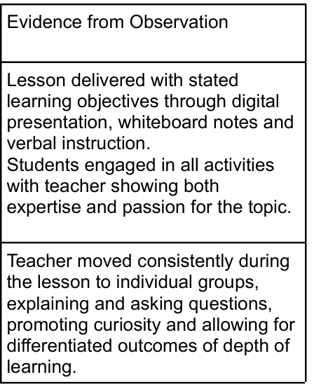
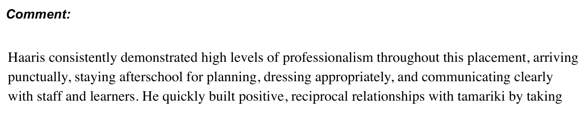
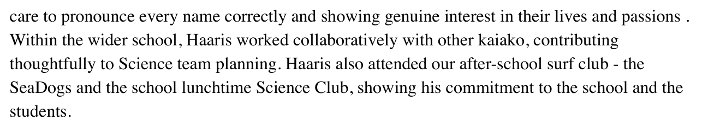
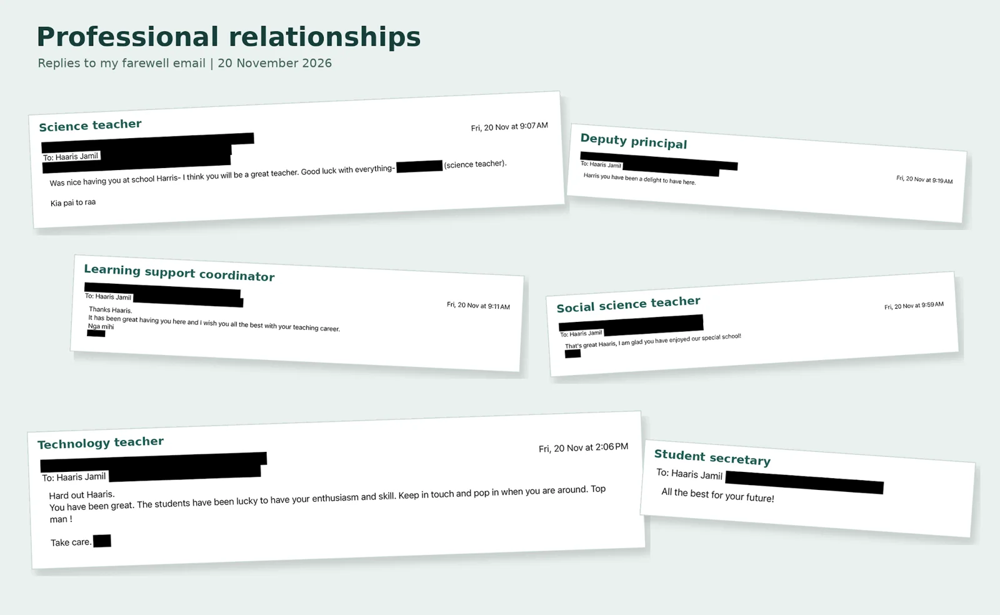

Focus
Build respectful, collaborative and positive relationships with learners, colleagues, families and the wider community to support learning and wellbeing.
Reflection
Sharing my pepeha gave students an opportunity to learn about me and ask questions. During the Science 1 lesson on 21 October, students asked me to deliver part of the lesson in Hindi, which I did. On 23 October, I used spare time for conversations that helped me get to know students. These were opportunities for relationship building, rather than proof that every student felt included or that achievement improved.
My mentor teacher’s observation provides evidence beyond my own impression: he recorded that I moved between groups, explained ideas and asked questions to promote curiosity and support different depths of learning. My conversations with him also inform my planning. Observing restorative practice and outdoor activities has helped me consider how expectations, support and relationships work together, but observing another teacher is not evidence that I have independently demonstrated the same practice. Direct evidence of my own work with whānau is not yet established in these records.
Next steps: continue individual conversations and seek brief learner feedback on the support they find useful. Record a specific example of adapting my teaching in response. Discuss appropriate opportunities for whānau engagement with my mentor teacher without claiming interactions that have not occurred.
Key Teaching Tasks
KTT 1: Individual conversations and responsive support help me build relationships with learners.
KTT 3: Collaboration with colleagues and participation in school life support reciprocal professional relationships.
KTT 4: The final mentor report provides independent feedback on my communication, punctuality and professional conduct.
Evidence links

Excerpt from mentor teacher’s feedback (21 October 2026, page 1). - Week 4 reflection (19–23 October 2026): My account of sharing my pepeha, students’ questions and individual conversations.
- General observations: Professional dialogue and observations of school culture provide context for my learning.
- Colleague correspondence: Replies from colleagues provide evidence of professional relationships across the staff.
- Combined student feedback: Students’ ratings and comments describe their experience of support and participation.


Excerpt from mentor teacher’s report (Standard 3, pages 6–7).
Colleague correspondence
These replies were received from colleagues in response to my farewell email on 20 November 2026.
The responses suggest that I established positive professional relationships across the staff. Colleagues acknowledged my enthusiasm and contribution and encouraged continued contact. Participating in school life helped me build reciprocal relationships and feel part of the school community.
